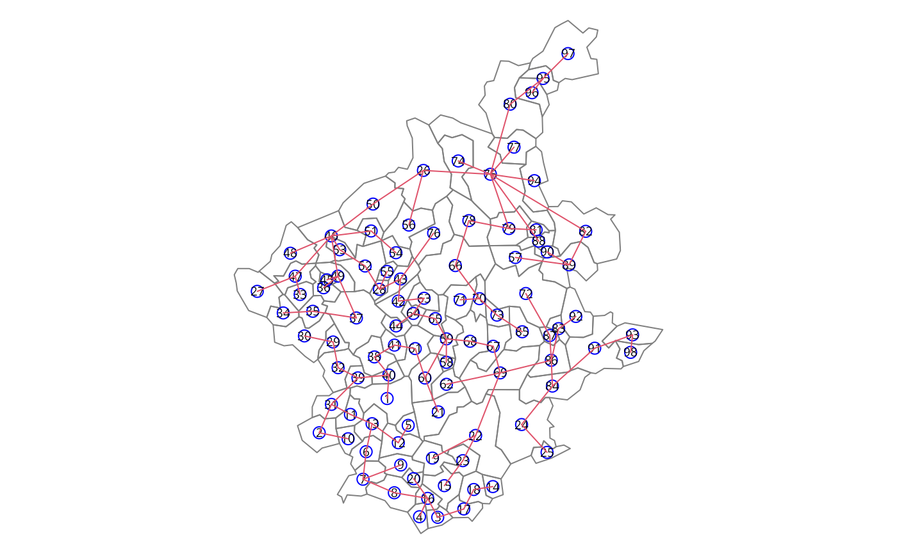

Find the minimal spanning tree
mstree.RdThe minimal spanning tree is a connected graph with n nodes and n-1 edges. This is a smaller class of possible partitions of a graph by pruning edges with high dissimilarity. If one edge is removed, the graph is partioned in two unconnected subgraphs. This function implements the algorithm due to Prim (1987).
Arguments
- nbw
An object of
listwclass returned bynb2listwfunction. See this help for details.- ini
The initial node in the minimal spanning tree.
Details
The minimum spanning tree algorithm.
Input a connected graph.
Begin a empty set of nodes.
Add an arbitrary note in this set.
While are nodes not in the set, find a minimum cost edge connecting a node in the set and a node out of the set and add this node in the set.
The set of edges is a minimum spanning tree.
Value
A matrix with n-1 rows and tree columns. Each row is two nodes and the cost, i. e. the edge and it cost.
References
R. C. Prim (1957) Shortest connection networks and some generalisations. In: Bell System Technical Journal, 36, pp. 1389-1401
Examples
### loading data
(GDAL37 <- as.numeric_version(unname(sf_extSoftVersion()["GDAL"])) >= "3.7.0")
#> [1] TRUE
file <- "etc/shapes/bhicv.gpkg.zip"
zipfile <- system.file(file, package="spdep")
if (GDAL37) {
bh <- st_read(zipfile)
} else {
td <- tempdir()
bn <- sub(".zip", "", basename(file), fixed=TRUE)
target <- unzip(zipfile, files=bn, exdir=td)
bh <- st_read(target)
}
#> Reading layer `bhicv' from data source
#> `/tmp/RtmpXVTJuL/temp_libpath3b356d487bad39/spdep/etc/shapes/bhicv.gpkg.zip'
#> using driver `GPKG'
#> Simple feature collection with 98 features and 8 fields
#> Geometry type: POLYGON
#> Dimension: XY
#> Bounding box: xmin: -45.02175 ymin: -20.93007 xmax: -42.50321 ymax: -18.08342
#> Geodetic CRS: Corrego Alegre 1970-72
### data padronized
dpad <- data.frame(scale(as.data.frame(bh)[,5:8]))
### neighboorhod list
bh.nb <- poly2nb(bh)
### calculing costs
lcosts <- nbcosts(bh.nb, dpad)
### making listw
nb.w <- nb2listw(bh.nb, lcosts, style="B")
### find a minimum spanning tree
system.time(mst.bh <- mstree(nb.w,5))
#> user system elapsed
#> 0.002 0.000 0.002
dim(mst.bh)
#> [1] 97 3
head(mst.bh)
#> [,1] [,2] [,3]
#> [1,] 5 12 1.2951120
#> [2,] 12 13 0.6141101
#> [3,] 13 11 0.7913745
#> [4,] 13 6 0.9775650
#> [5,] 11 31 0.9965625
#> [6,] 31 39 0.6915158
tail(mst.bh)
#> [,1] [,2] [,3]
#> [92,] 89 90 2.5743702
#> [93,] 26 56 2.6235317
#> [94,] 86 87 2.6471303
#> [95,] 87 72 0.7874461
#> [96,] 49 36 2.8743677
#> [97,] 24 25 3.4675168
### the mstree plot
par(mar=c(0,0,0,0))
plot(st_geometry(bh), border=gray(.5))
plot(mst.bh, st_coordinates(st_centroid(bh)), col=2,
cex.lab=.6, cex.circles=0.035, fg="blue", add=TRUE)
#> Warning: st_centroid assumes attributes are constant over geometries
